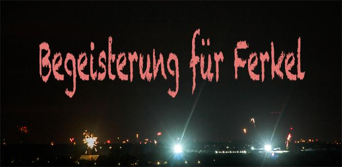

Viren und multiresistente Keime haben in Massentierhaltungsanlagen größere Expansionsmöglichkeiten als auf einem kleinen Hühnerhof.
Darum dürfen Aufwendungen für Sicherheitssysteme in "modernen" Massen-Tierhaltungsanlagen nicht zu klein geraten.
Ähnliche Kriterien kennen wir aus dem Massentourismus und von der Deutschen Bahn.
Kleine Abweichungen von der Norm haben große Wirkung. Eine abgestellte Tasche kann das ICE-Wesen bremsen.
Passend dazu eine kleine Botschaft zum Jahresende:
"Ein unbekanntes Virus hat das Kreuzfahrtprogramm zweier Luxusliner in der Karibik zum Jahresende durcheinandergebracht."
Das alles kostet nicht wenig... letztendlich den Staatshaushalt, der für Schadensbegleichung aufkommen muss.
Die finanziellen Spielräume auch der Komunen werden enger wenn die Kosten nach unten abgewälzt werden.
Der Zwang den billigsten Anbieter zu wählen sorgt in der Regel für weitere Folgeschäden.
So ist zwar die hier verwendete phpBB eine freie und kostenlose Forensoftware, die allen Ansprüchen an solche Systeme gerecht wird,
aber wenn keine Personalkosten für die Pflege des Forum auch zum Jahreswechsel eingeplant werden,
dann kann eine Spamflut unbemerkt so eine Forum auch mal komplett stilllegen.
Denn Virusproduktion kennt keine Feiertage.
2013 soll endlich die erhoffte Agrarwende praktiziert werden.
Zum Jahresauftakt stellte der Gülle-Fabrikant Straathof mit seiner ständigen Präsenz alle anderen Ballereien in den Schatten.
[Anhang: <!-- ia0 -->thumb-begeisterung2013blog.jpg<!-- ia0 -->]
Wie lange noch bleiben Energiefresser von der Ökosteuer befreit?
